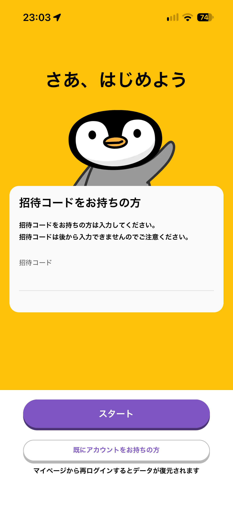
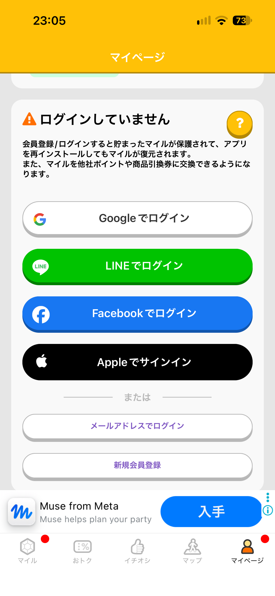
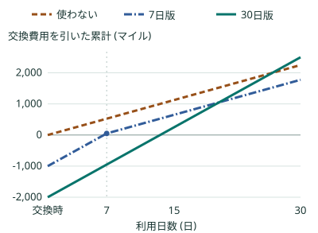
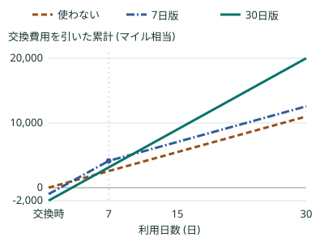
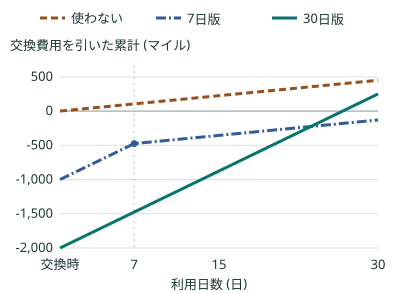
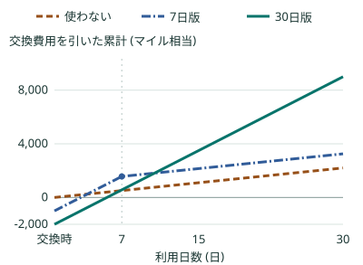
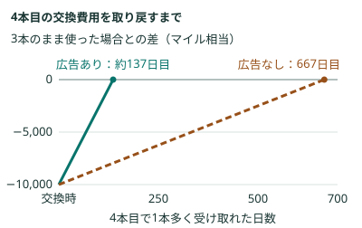

移動系ポイ活アプリとして知られるトリマは、リリース以来アップデートを重ね、マイルを獲得する手段も増えています。
この記事ではトリマの基本的な情報や始め方、代表的な貯め方である歩数、移動、レシートについて詳しく解説します。
私は2022年1月からトリマを使っています。様々なアップデートがあるものの、現在でも十分稼げるアプリかと思いますので、ぜひご覧ください。
トリマの始め方と招待コード
アプリの登録手順と招待コードを入力するタイミング
1．招待コードをコピーして、トリマをインストールします。
招待コードを使う方は、ストアを開く前にコピーしておくと、初回画面でそのまま貼り付けられます。
筆者のトリマの招待コードは「9-GXLp1me」です。
アプリの利用開始時にコピペして利用することで、5,000マイル(約40円分)もらえます。
ボタンを押せばワンタップでコピーできますので、よければご利用ください！

歩数と移動距離でマイルが貯まるポイ活アプリ
GeoTechnologies, Inc. ／ 無料2．最初の画面で招待コードを入力します。
「招待コード」欄にコピーしたコードを貼り付けてから「スタート」をタップします。この画面を進むと、あとからコードを入力することはできません。

3．「マイページ」を開いて、会員登録・ログインを済ませます。
画面右下の「マイページ」をタップします。「ログインしていません」と表示されたら、GoogleやLINEなどで始める方は対応するボタンを、メールアドレスで初めて登録する方は「新規会員登録」を選んでください。

招待特典の5,000マイルを受け取れるのは、コードを入力したときではなく、会員登録・ログインが完了したときです。
公式ヘルプ：招待コードで貯める
歩数と移動距離を記録するための初期設定
歩数にはスマホの歩数データ、移動距離には位置情報を使います。初回の案内では、歩数の読み取り（iPhoneはモーションとフィットネス、Androidは身体活動など）を許可します。画面を閉じて電車に乗っている間も距離を記録したい場合は、端末の設定からトリマの位置情報を「常に許可」にしてください。
最初の外出後に「歩数」と「移動」の両方を開いてみましょう。歩数だけ増えてタンクが動かない場合は位置情報の設定を、歩いたのに歩数が増えない場合は歩数の計測設定を確認します。
トリマのマイルの貯め方｜歩数・移動・チェックイン・レシート
たとえば、駅からお店まで歩くと、歩いた分は「歩数」に、進んだ距離は「移動」に記録されます。お店の近くに宝箱があればチェックインでき、買い物のあとはレシートも使えます。まずは、それぞれ何をきっかけに受け取れるかを見てみましょう。
| 貯め方 | いつ使う？ | 受け取り方 |
|---|---|---|
| 歩数 | スマホを持って歩いたとき | 通常は1,000歩ごとに回収 |
| 移動 | 徒歩・電車・車などで移動したとき | 満タンのタンクを1本ずつ回収 |
| チェックイン | 対象スポットの近くに来たとき | 地図で宝箱を開ける |
| レシート | 買い物のあと | 未登録のレシートを撮影し、登録後に回収 |
歩数で貯める｜何歩ごとに受け取れる？
初期設定では1,000歩ごとに1回、1日1万歩まで受け取れます。たとえば、帰宅したときの表示が3,200歩なら、まだ受け取っていない分は最大3回です。2倍速モードを使っている間は500歩ごとに1回になります。
「歩数」画面では、広告を見ずに15マイルを受け取るか、動画を見て60マイルを受け取り、さらにガチャを引くかを選べます。歩数は午前3時にリセットされるので、翌朝に持ち越さず、その日のうちに回収しておきましょう。
公式ヘルプ：歩数で貯める
歩数上限を増やすのは、1万歩を超える日が多くなってからでも遅くありません。上限を増やしても、普段の歩数がその範囲内なら受け取れる回数は変わりません。
移動で貯める｜タンクが満タンになったらどうする？
電車や車に乗っている間など、歩数がほとんど増えない場面でも、移動距離はタンクに貯まります。通常モード・倍速なしなら、約10kmでタンク1本が満タンになるのが目安です。
「移動」画面で100％になったタンクがあれば、1本ずつマイルに変えられます。通常モードでは広告なしで15マイル、動画を見るとランクに応じて60〜100マイルとガチャ1回です。最初のタンクは3本。すべて満タンになるとそれ以上は貯まらないので、長距離を移動する日は、乗り換えや休憩のときに空きを作っておくと取りこぼしを減らせます。
公式ヘルプ：移動距離で貯める
タンクを増やすかどうかは、移動距離だけでなく、途中で回収できるかで決まります。乗り換えのときに空きを作れるなら、まずは初期の本数で試してみましょう。
チェックインで貯める｜対象スポットで宝箱を開ける
「マップ」という下のメニューを開くと、場所によっては宝箱が表示されます。宝箱は50m以内に近づくと開けられてマイルを獲得できます。
すぐにマイルを獲得しなくても「ストック（あとで開ける）」ボタンを押すことで同時に15個まで貯めておくことが可能です。
宝箱から50m以内の地点にしばらく滞在すると自動で宝箱がストックされることがあります。その場合でも同時には15個までのストックとなるのでご注意ください。
なお、チェックインの宝箱は1日で50個までの獲得が上限となります。
公式ヘルプ：チェックインで貯める
レシートで貯める｜撮影前に日付と明細を確認する
まず確認するのは、撮影・登録する日から90日以内の買い物で、まだトリマに登録していないレシートかどうかです。「レシート」画面で、チェーン店名、店舗名と電話番号、購入日、すべての商品名・単価・数量、合計金額とポイント情報まで写るように撮影します。公式ヘルプではチェーン店発行のレシートが対象と案内されています。
登録できたら、通常はレシート1枚につき1回受け取れます。広告なしなら15マイル、動画を見ると60マイルに加えてガチャを1回引けます。
公式ヘルプ：どんなレシートがマイル獲得対象ですか？
公式ヘルプ：レシートで貯める
歩数・移動の回収1回で何マイル貯まる？
広告を見る場合と、見ない場合の違い
歩数や移動タンクを回収するときは、広告を見ずにマイルを受け取るか、動画を見て基本報酬とガチャを受け取るかを選べます。
| 受け取り方 | 基本報酬 | ガチャ |
|---|---|---|
| 広告を見ない | 15マイル | なし |
| 動画を見る | 60マイル | 1回 |
基本報酬が60マイルの場合、動画を見ることで増えるのは45マイルとガチャ1回分です。動画を見る場合の基本報酬はユーザーランクによって変わります。表は通常モードのビギナーランクの場合です。
公式ヘルプ：歩数で貯める
公式ヘルプ：移動距離で貯める
ガチャまで含めると、回収1回はいくら分？
筆者が記録した新仕様の初回ガチャ3,703回では、直接当たったマイルは1回平均6.77マイルでした。基本60マイルに足すと66.77マイルです。メダルや動画スキップ券も使う前提なら、目安は次のように変わります。
| 受け取り方 | マイル | 円換算 |
|---|---|---|
| 広告を見ない | 15マイル | 約0.13円 |
| 動画とガチャ | 約73.34マイル相当 | 約0.61円 |
| さらにWチャンスも行う | 約77.16マイル相当 | 約0.64円 |
動画ありの2行は、アイテムの換算価値を含む試算です。最後の行は、10マイルが当たるたびに追加の動画を見てWチャンスを行う場合です。表の金額は120マイル＝1円として計算した回収1回あたりの目安で、広告1再生の単価ではありません。
トリマのガチャ確率は？3万回以上の実測結果とWチャンスの当選率
トリマのアイテムは交換すべき？種類と損益分岐点
| 貯め方 | 上限を増やすアイテム (各10,000マイル・期限なし) |
回収の機会を増やすアイテム (7日1,000／30日2,000マイル) |
|---|---|---|
| 歩数 | 歩数上限＋5000歩：1日に報酬を受け取れる歩数の上限が5,000歩増えます。 | ローラースケート：通常1,000歩ごとの回収が500歩ごとになります。7日間・30日間の2種類です。 |
| 移動 | 追加タンク：タンクが1本増え、途中で回収せずに貯めておける量が増えます。 | スピードアップ定期券：タンクが通常の5倍の速さで貯まります。7日間・30日間の2種類です。 |
| レシート | レシート上限＋4枚：1日に登録できるレシートが6枚から10枚に増えます。 | 金の招き猫：レシート1枚でマイルを受け取れる回数が1回から2回になります。7日間・30日間の2種類です。 |
回収の機会を増やすアイテムは初回無料のこともありますが、今回は通常価格で計算します。元が取れたかどうかは、追加で回収できた報酬で判断します。
歩数｜ローラースケートを使うと、何マイル多く貯まる？
毎日5,000歩を30日間歩き、「使わない」「7日版を1回使う」「30日版を1回使う」の3通りを比べます。7日版は1,000マイル、30日版は2,000マイルを初日に支払い、買い直しません。毎日すべて回収すると、通常は1日5回、使用中は10回です。7日版は8日目から通常の5回に戻ります。
| 使い方 | 7日目 | 30日目 |
|---|---|---|
| 使わない | 525 | 2,250 |
| 7日版 | 50 | 1,775 |
| 30日版 | −950 | 2,500 |

広告なしでは1回15マイルです。30日版は21日目に7日版を追い抜きますが、使わない場合を上回るのは27日目です。30日間で150回多く回収して、手元に残る差は250マイルです。
| 使い方 | 7日目 | 30日目 |
|---|---|---|
| 使わない | 約2,567 | 約11,001 |
| 7日版 | 約4,134 | 約12,568 |
| 30日版 | 約3,134 | 約20,002 |

毎回広告を見る場合、30日後に残るのは、使わない場合に比べて7日版で約1,567マイル相当、30日版で約9,001マイル相当多くなる試算です。基本60マイルにガチャ報酬を加えた実測平均 (メダル・券の換算込みで1回73.34マイル相当) を使いました。追加分も毎回広告を見て回収する前提で、Wチャンスは含めていません。
歩数別に、何日目で交換費用を回収できるか見る
ここでは、ローラースケートを使わない場合と比べて、追加で受け取った報酬が交換費用に届く日を示します。
| 毎日の歩数 | 広告あり (目安) | 広告なし |
|---|---|---|
| 5,000歩 | 3日目 | 7日間では届かず |
| 8,000歩 | 2日目 | 7日間では届かず |
| 10,000歩 | 2日目 | 7日目 |
| 毎日の歩数 | 広告あり (目安) | 広告なし |
|---|---|---|
| 5,000歩 | 6日目 | 27日目 |
| 8,000歩 | 4日目 | 17日目 |
| 10,000歩 | 3日目 | 14日目 |
歩数｜1万歩を超える日は、歩数上限を上げた方がいい？
1日10,000歩以下なら、ローラースケートの有無にかかわらず、上限を上げても報酬は増えません。最初の1個は10,000マイルで、歩数上限が10,000歩から15,000歩に上がります。有効期限はありません。
たとえば12,000歩の日は、上限を上げると、それまで対象外だった2,000歩分を受け取れます。通常なら1,000歩ごとに計2回、ローラースケート使用中なら500歩ごとに計4回です。
同じ歩数・受け取り方で、上限だけを変えて比べます。スケート使用時は、どちらも同じ30日版を使い続けます。スケート代は両方にかかるため、差額には含めません。広告ありは実測平均の1回73.34マイル相当、広告なしは15マイルとして、追加分をすべて受け取る前提です。
| 1日の歩数 (追加回収) |
広告あり (目安) | 広告なし |
|---|---|---|
| 12,000歩 (＋2回) |
69日目 | 334日目 |
| 15,000歩以上 (＋5回) |
28日目 | 134日目 |
| 1日の歩数 (追加回収) |
広告あり (目安) | 広告なし |
|---|---|---|
| 12,000歩 (＋4回) |
35日目 | 167日目 |
| 15,000歩以上 (＋10回) |
14日目 | 67日目 |
たとえば毎日12,000歩・広告なしでスケートを使う場合、上限を上げなければ1日20回、上げれば24回受け取れます。差は1日60マイル (4回×15マイル)。交換時には10,000マイル少なかった手元のマイルが、167日目に上限を上げなかった場合を上回ります。
最大30,000歩まで広げるには4個・計40,000マイル必要です。
移動｜スピードアップ定期券は、何本多く回収すれば元が取れる？
定期券を使うとタンクが5倍速で貯まります。ただし、満タンのまま移動しても、それ以上は貯まりません。報酬が5倍になると考えず、定期券がないときより何本多く受け取れるかで判断します。
| 期間と通常価格 | 広告あり (目安) | 広告なし |
|---|---|---|
| 7日版 (1,000マイル) |
14本 | 67本 |
| 30日版 (2,000マイル) |
28本 | 134本 |
移動タンクは約10kmで1本が満タンになる目安です。定期券を使うことで約2kmで1本が満タンになる計算になります。
毎日約10km分移動する人が、満タンのたびに回収するなら、定期券を使えば1日5本分です。増えるのは1日4本、7日間で28本。
7日版の通常価格1,000マイルを引くと、毎回広告を見る場合は約1,054マイル相当多く、広告なしなら580マイル少なく残る試算です。
※広告なしは1本15マイル、広告ありは歩数と同じく基本60マイルとガチャ報酬を合わせた平均73.34マイル相当で試算。
毎日約10km移動し、定期券なしでは加速せず、満タンになるたびにすべて回収する前提で30日間を比べます。定期券は初日に1回だけ交換します。7日版は8日目から通常の1日1本に戻ります。
| 使い方 | 7日目 | 30日目 |
|---|---|---|
| 使わない | 105 | 450 |
| 7日版 | −475 | −130 |
| 30日版 | −1,475 | 250 |

| 使い方 | 7日目 | 30日目 |
|---|---|---|
| 使わない | 約513 | 約2,200 |
| 7日版 | 約1,567 | 約3,254 |
| 30日版 | 約567 | 約9,001 |

移動｜追加タンクは必要？ 3本で足りる人・4本目が役立つ人
4本目が役立つかどうかは、1日の移動距離よりも、次に回収できるまでに3本を超えて貯まるかで決まります。タンクを増やしても貯まる速さは変わりません。増えるのは、あとでまとめて受け取れる本数です。
たとえば、行きと帰りに2本分ずつ、1日で計4本分貯まるとします。行きに2本、帰宅時に2本を受け取れるなら、最初の3本で十分です。一方、朝はアプリを開けず、帰宅後にまとめて受け取るなら、3本目が満タンになったあとの1本分は取りこぼします。4本目があれば、その分も帰宅後に受け取れます。
追加タンクは1本10,000マイルで、有効期限はありません。4本目のおかげで毎日1本多く受け取れるなら、交換費用を取り戻せるのは、毎回広告を見る場合は137日目が目安です（1本平均73.34マイル相当で試算）。広告なしなら667日目です（1本15マイル）。4本目を使わずに済んだ日は、この日数に数えません。

もともとタイミングを分けて4本とも受け取れていた人は、夜にまとめても報酬は増えません。その場合は、外出中の回収を省ける便利さに10,000マイルを使いたいかで判断してみてください。
レシート｜「上限＋4枚」と「金の招き猫」はどう使い分ける？
「上限＋4枚」で増えるのは、1日に登録できるレシートの枚数です。通常は6枚までですが、交換すると10枚まで登録できます。7枚目を翌日に回して登録できるなら、もらえるマイルの合計は変わりません。翌日以降に回しても登録しきれない日が続くなら、上限を増やす意味があります。
一方、「金の招き猫」で増えるのは、レシート1枚からマイルを受け取れる回数です。通常は1枚につき1回ですが、使用中は2回受け取れます。1回あたりの報酬は、広告なしなら15マイル、動画を見るなら60マイルとボーナスガチャ1回です。
7日版を通常価格の1,000マイルで交換するなら、毎回動画を見る場合は7日間で14枚、1日平均2枚が元を取る目安です。追加分も毎回受け取り、ガチャを含めて1回平均73.34マイル相当とした試算です。
トリマのマイルの交換方法｜何マイルでいくら分？
300円分に交換するには、何マイル必要？
他社ポイントに300円分を交換する場合、用意するのは36,000マイルです。300円分にあたる30,000マイルに、交換手数料20％（6,000マイル）が加わります。300円分はあくまで一例なので、まずは使いたい交換先を開いて、選べる金額を確認してみてください。
今回確認した交換画面では、最低交換マイル数は24,000マイルでした。
ブロンズランク以上なら、交換後にランクに応じてマイルの一部が戻ります。ただし、最初からその分が割り引かれるわけではありません。
| ランク | 前月の 獲得マイル |
還元率 | 24,000マイル 交換時の還元 |
|---|---|---|---|
| ビギナー | 9,999以下 | 0％ | 0マイル |
| ブロンズ | 10,000～ |
1％ | 200マイル |
| シルバー | 50,000～ |
3％ | 600マイル |
| ゴールド | 100,000～ |
5％ | 1,000マイル |
| プラチナ | 300,000以上 | 20％ | 4,000マイル |
他社ポイントに交換して、受け取るまで
トリマで交換を申し込んだら、続けて「デジタルギフト」の画面で受け取り手続きをします。ここでは、Vポイントを例に説明します。
- 交換先と金額を選びます。 トリマの「交換」を開き、「他社ポイント」からVポイントを選びます。交換したい金額と、手数料を含めて何マイル必要かを確認します。
- トリマで交換を申し込みます。 初めての交換では電話番号認証を済ませます。交換内容を確認し、「スライドして交換」を右に動かします。
- デジタルギフトで受け取ります。 ブラウザでデジタルギフトが開いたら、画面の案内に沿ってVポイントの受け取り手続きを完了します。
マイルが減ったのに、受け取る前に画面を閉じてしまった場合も、交換をやり直す必要はありません。 トリマの「他社ポイント」から「交換履歴を開く」をタップし、該当する履歴の「デジタルギフトを開く」から受け取りを再開できます。
まとめ｜トリマは、普段の外出を活かしたい人に向いている
トリマは、通勤や買い物でよく歩く人にも、電車やバスで移動することが多い人にも向いています。たとえば駅まで歩いて電車に乗った日は、帰宅後に「歩数」と「移動」の両方を確認してみてください。歩いた分は歩数の報酬に、乗車中の移動はタンクに貯まります。
始めたばかりなら、アイテムは交換せずに使ってみるのがおすすめです。1日に移動タンク4本分移動する人でも、行きと帰りに分けて回収できれば、最初の3本で取りこぼしはありません。歩数上限も同じで、普段は1万歩以内なら、上限を上げても受け取れるマイルは増えません。「よく歩くか、よく移動するか」だけでなく、「今のままだと何を受け取り損ねるか」で選ぶと、必要なアイテムが見えてきます。